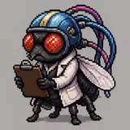

프롤로그 · 읽기 전에 꼭
긴급 공지 — 연구실 위상 전환 사고
이 사이트 그림을 넘기다 보면 같은 하루가 표지에서는 게임 속 점 그림, 본문에서는 머리가 큰 꼬마 체형, 어떤 곳에서는 7등신으로 나옵니다. 잘못 그린 것이 아닙니다. 사고가 있었습니다.
그림 준비 중위상 전환 사고 — 주판봇이 큰 버튼을 누르자 연구실 식구들의 그림 형태가 제각각 바뀐 장면파일 이름 ph_key · 요청문은 저장소 docs/image_requests

주판봇박사님, 이 "위상 전환기"의 빨간 버튼… 한 번만 눌러 봐도 되나요?
박사안 돼! 그건 아직 다이얼이 고정되지 않아서 무작위로—

주판봇…이미 눌렀습니다. 그것도 연타로.

하루제, 제 몸이 네모 점이 됐어요! 표지에서는 16비트 게임 캐릭터예요!

시아…저는 2.5등신이 됐습니다. 키는 줄었지만 마음은 그대로입니다.
모아저는 2부 한 장 안에서 반실사, 애니, 동그라미 얼굴로 세 번이나 바뀌었어요.

초파리 연구원전환기가 그림마다 위상을 무작위로 골라. 그래서 페이지마다 우리 모습이 다른 거야.

박사침착해라. 위상수학에서는 도넛과 손잡이 달린 머그컵을 같은 모양으로 본다. 늘이고 구부려도 구멍 개수는 바뀌지 않으니까. 우리에게도 위상이 바뀌어도 바뀌지 않는 값이 있다. 그게 고정값이다.
위상 도감 — 지금까지 발견된 다섯 가지 모습
| 위상 | 모습 | 나오는 곳 |
|---|---|---|
| 픽셀 위상 | 16비트 게임 화면처럼 네모 점으로 그린 모습 | 모든 표지 |
| SD 위상 | 머리가 몸만 한 2.5~3.5등신 개그 모습 | 1~6부 본문 그림 대부분 |
| 애니 위상 | 7등신 안팎의 보통 애니 그림 비율 | 1부 등신 비교, 연습 과제 |
| 반실사 위상 | 턱이 길고 눈이 작은 사실에 가까운 모습 | 2부 화풍 비교 |
| 스티커 위상 | 흰 테두리를 두른 정사각형 이모티콘 모습 | 5부 연습 과제 |
바뀌지 않는 값 — 캐릭터별 고정값
위상이 무엇으로 바뀌든 아래 특징이 남아 있으면 같은 사람입니다. 그림을 볼 때마다 이 목록으로 "아직 그 사람인가?"를 확인해 보세요.
| 캐릭터 | 고정값 |
|---|---|
| 분홍 머리에 남색 줄 · 정수리 번 2개 · 앞머리 가운데 남색 줄 · 라벤더 후드 | |
| 검은 생머리 · 머리 장식 없음 · 은 귀걸이 · 검은 메이드복 | |
| 회갈색 웨이브 · 흰 프릴 머리띠 · 왼쪽 귀 위 흰 리본 · 체크 나비넥타이 | |
| 흰 줄 있는 짙은 머리 · 굵은 눈썹 · 청록 사각 안경 · 흰 가운과 검은 조끼 |
실험 0위상 전환기를 직접 눌러 보세요 · 이 사이트에 실제로 나온 그림 중 하나가 무작위로 나옵니다
사고 기록 — 이 사람, 같은 사람인가요?
전환기 다이얼에 하루·시아·모아·박사의 네 가지 위상을 나란히 걸어 보았습니다. 모습은 넷이지만 고정값은 그대로라 모두 같은 사람으로 보여야 합니다.
그림 준비 중하루의 네 위상 — 같은 자세의 픽셀·SD·애니·반실사 하루파일 이름 ph_lineup_haru · 요청문은 저장소 docs/image_requests
그림 준비 중시아의 네 위상 — 같은 자세의 픽셀·SD·애니·반실사 시아파일 이름 ph_lineup_sia · 요청문은 저장소 docs/image_requests
그림 준비 중모아의 네 위상 — 같은 자세의 픽셀·SD·애니·반실사 모아파일 이름 ph_lineup_moa · 요청문은 저장소 docs/image_requests
그림 준비 중박사의 네 위상 — 같은 자세의 픽셀·SD·애니·반실사 박사파일 이름 ph_lineup_doc · 요청문은 저장소 docs/image_requests
위상 붕괴 — 고정값까지 바뀌어 버린 날
버튼을 너무 세게 누른 날에는 고정값까지 바뀌었습니다. 이때는 위상이 바뀐 것이 아니라 다른 사람이 된 것입니다. 실제로 이 사이트에도 그런 그림이 두 장 있습니다: 5부 리액션 짤 B(참고 그림 없이 만들었더니 네 명 모두 다른 사람)와 6부 f8 컷마다 다른 얼굴(모아의 머리색·눈 색이 컷마다 바뀜).
그림 준비 중위상 붕괴 — 거울 속 자기 모습이 고정값까지 바뀐 모아와 박사파일 이름 ph_collapse · 요청문은 저장소 docs/image_requests
그림 준비 중고정값 되돌리기 — 각자 고정값을 붙잡고 원래 모습을 지키는 연구실 식구들파일 이름 ph_restore · 요청문은 저장소 docs/image_requests

박사그래서 이 편의 모든 프롬프트에는 고정값 문장과 기준 그림이 붙어 있다. 위상은 바뀌어도 괜찮지만, 고정값이 바뀌면 다른 사람이다.

초파리 연구원읽으면서 그림마다 고정값 찾기를 해 봐. 웃음 편의 숨은 놀이야.

주판봇그럼 저는 다음 편에서 또 눌러도…

하루안 돼요!
주의할 점 — "위상 전환기"는 이야기 속 설정입니다. 실제로는 그림 생성 AI가 요청할 때마다 그림체·등신을 조금씩 다르게 그리기 때문에 생긴 차이이고, 이를 줄이는 방법은 5부 2단계 일관성에서 다룹니다. 위상수학 비유는 "늘이고 구부려도 남는 성질"을 떠올리기 위한 것입니다.